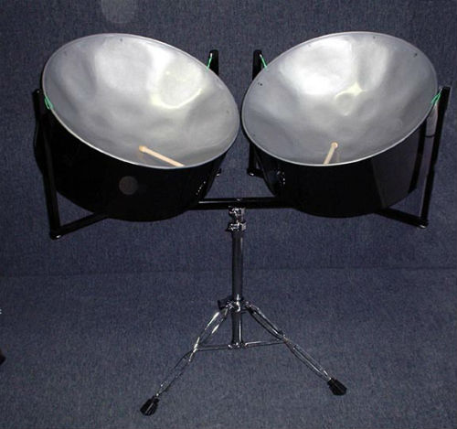
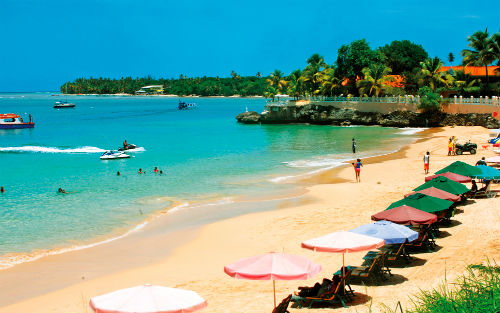
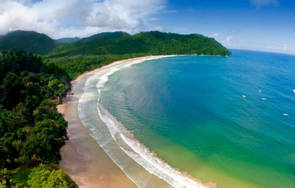

Trinidad and Tobago, is a twin island country situated off the northern edge of the South American mainland, lying just 11 kilometres (6.8 miles) off the coast of northeastern Venezuela and 130 kilometres (81 miles) south of Grenada. Trinidad and Tobago gained its independence from the United Kingdom on 31 August 1962. Elizabeth II remained head of state as Queen of Trinidad and Tobago. Eric Williams, a noted Caribbean historian, widely regarded as "The Father of The Nation," was the first Prime Minister; he served from 1956, before independence, until his death in 1981.
The Pitch Lake aka Asphalt
The Pitch Lake is located in southwest Trinidad in the village of La Brea. It is the largest and most significant pitch lake in the world, measuring approximately one hundred acres (41 hectares), and is estimated to be 76 meters deep in the center. The liquid asphalt is black and viscous, but the surface is semisolid, and can be walked on. The asphalt is so soft in some areas that an individual can slowly sink if he or she stands on the surface too long. In some places one can put a stick through the asphalt and remove liquid tar. The lake was created thousands of years ago by the process of subduction, when the Caribbean continental plate was forced under another plate. This opened fault lines that allowed oil from deep underground deposits to rise to the surface, where it collected in a volcanic crater. The air caused lighter elements of the oil to evaporate, leaving behind the heavy asphalt, a mix of oil, clay and water.
SteelPan
Steel pans (steel drums)were created on the Caribbean island of Trinidad in the 1930s, but steel pan history can be traced back to the enslaved Africans who were brought to the islands during the 1700s. They carried with them elements of their African culture including the playing of hand drums. These drums became the main percussion instruments in the annual Trinidadian carnival festivities. In 1877, the ruling British government banned the playing of drums in an effort to suppress aspects of Carnival which were considered offensive. Bamboo stamping tubes were used to replace the hand drums as they produced sounds comparable to the hand drum when they were pounded on the ground. These tubes were played in ensembles called tamboo bamboo bands.
Beautiful Beaches
 Maracas Beach is a beach on the island of Trinidad. It is located on the north side of the island, an hour's mountainous drive from the capital city of Port of Spain via the North Coast Road. Unlike many of the northern beaches of Trinidad, Maracas Beach is protected by a deep bay. It is one of the most well known beaches in the island of Trinidad as it is considered by some to be the most beautiful beach of its size located relatively close to the capital city.